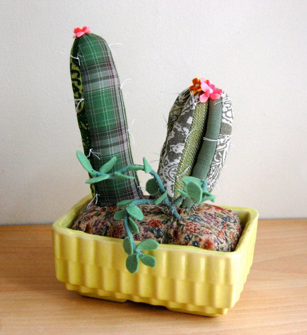
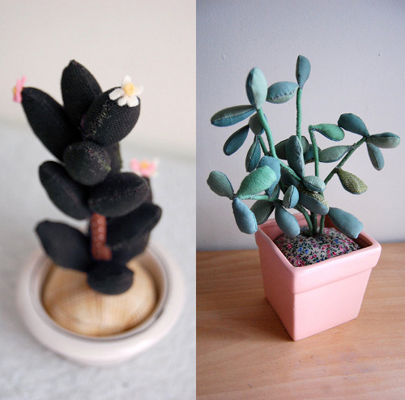

|  |
| 原圖出處 : Design*Sponge |
{kind=link}
以
前曾經發生過一件糗事，當我第一次在學校宿舍種植一株鼠尾草小盆栽，看到鼠尾草都垂下樹葉，我很天真開心地和我的高中同學報告我的鼠尾草成長心得如下 :
“我的鼠尾草好可愛，好像有心事一樣，都垂下樹葉來了! “
結果我超有智慧的高中同學冷冷地說道 : “那是因為妳沒有澆水吧…”
我想如果鼠尾草能夠為自己發聲，一定也想發出 “我終於得救”的歡呼聲吧 !
而我的植物殺手的歷史，可以追溯到我朋友送我的兩盆盆栽 :
 |
 |
左邊是愈長愈高，卻一直不知道該換盆的 “我快把我的腰給折斷”的不具名可憐盆栽。右邊則是”救命呀!我不要跟我兄弟一樣枯萎!”的紅色小辣椒。隨著歲月的增長，我的受害者名單愈來愈長，其中包括了不知道我的厲害的朋友，而送給我 “袋內花園” (Garden in a bag)，當養出小小的初芽，興奮一陣子後，還來不及長高長大，就銷香玉殞了 ! (默)
但是如果妳和我一樣 ，絲毫缺乏照顧植物的天份。那麼恭喜妳，一個適合不需要妳煩惱要澆多少份量的水，要曬多少的太陽卻又賞心悅目的植物終於出現了 ! 解決方法就是上 Etsy 購買 Sian Keegan 的填充花盆。看看他們，是不是既可愛又方便呢 ?
 |
| 原圖出處 : Design*Sponge |
看著這些乍看像似真的盆栽一樣的填充盆栽。連裝飾的盆子都別出心裁，包括了馬克杯和盆栽常見的陶瓷器皿。因為不需要換水和培養土壤，擺在室內又不用擔心生長蟲子和蚊蠅，只是雖然養不死，但也養不大。少了修修剪剪的樂趣，也少了春暖花香的味道，怎麼說還是取代不瞭真正的盆栽呀 ! 雖然這麼說，但是我再繼續在我的受害者名單上增添新的植物，說什麼植物協會的人可能也要我放棄園藝這條路，嚴重考慮購買填充植物吧 !
|  |
| 原圖出處 : Design*Sponge |
{kind=link}
最近因為看到 pea 在 google+ 放上她收集的心豆照片(又叫倒地鈴)，最後演變成她家裡兩隻可愛的貓咪要學龍貓而我家的 Oreo 要學熊貓跳發芽舞的對話。無論心豆的未來如何，都非常謝謝 pea 熱情的千里送豆。因為最近非常的忙碌，再加上不願意把這些可愛的豆子入土為安，所以距離入土儀式還非常遙遠，但是想起小小的嫩芽在心狀的種子上冒出的畫面，就像那維持不易剛成長的友誼般，脆弱但意義非凡。
 |
| 感謝 pea 千里送心豆! <3 |